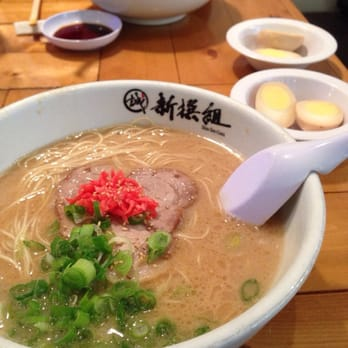

Ramen Recipe

Description
We are going to prepare the delectable soup noodle dish from Japan: Shio Ramen,
using the combination of the last two recipes to finish up the finale. In this
final part of the segment we will add the toppings to the last 3 recipes which will
take more time but bring out the best parts of what make good ramen, good ramen.
Ingredients
- Green Onions
- Kakuragi Mushrooms
- Bamboo Shoots
- Pork Belly
- Ramen Broth
- Ramen Noodles
- Naruto
- Soy Sauce
- Salt
- Pepper
- Hot sauce of your choice
Supplies
- Ramen bowl
- Chopsticks
- Pot
- Strainer
- Pan
- Cutting Board
Steps
- Take the pot and add water and put on high heat.
- Take the noodles and boil them to the desired texture, then strain them.
- Place Ramen broth into the ramen bowl.
- Carefully place the noodles into the ramen broth/bowl.
- Take pork belly and cut to small enough chunks while seasoning with salt, pepper, and soy sauce.
- Prepare the pan by putting seasme oil and heating to a medium temperature before putting on the pork belly.
- After Pork belly has finished cooking, place into the ramen bowl.
- Using a cutting board, prepare green onions/naruto/bamboo shoots/kakuragi mushrooms to desired before placing into the bowl.
- The Ramen is now ready, add hot sauce to soup to your discretation.